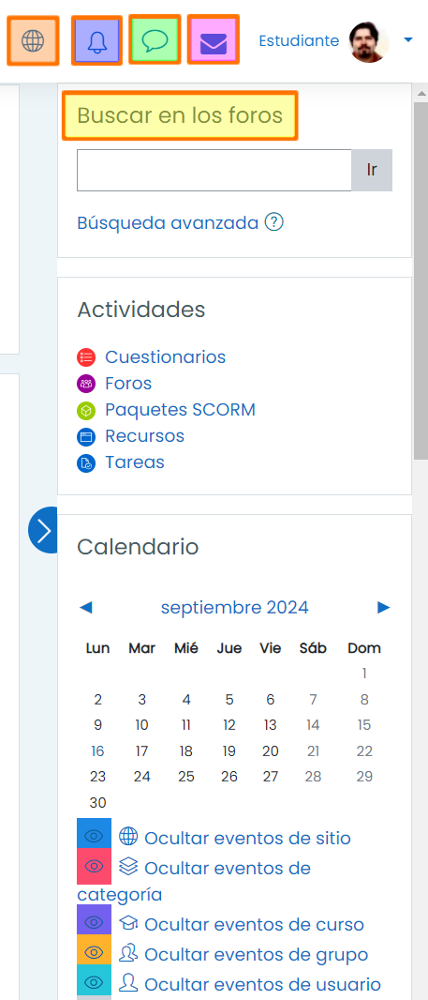
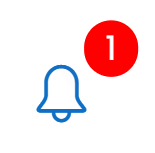
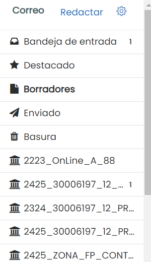

La parte derecha de la pantalla la ocupa la Zona de Notificación desde la cual podrás cambiar el idioma global de la plataforma EaD, comprobar tus notificaciones, mensajes privados, correos electrónicos locales además de usar el motor de búsqueda dentro de los foros del módulo profesional. También puedes encontrar aquí un resumen de los eventos del calendario para el módulo en el que te encuentres.

Idioma global
Haciendo click en el icono del globo podemos alternar entre el español y el inglés como idioma global de la plataforma.
Notificaciones
La campana de notificaciones nos advierte de la entrega de tareas, la publicación de nuevos mensajes en el foro o que hemos recibido algún tipo de retroalimentación en las tareas. Al hacer click en el icono de notificaciones podremos ver la notificación completa o comprobar todas las notificaciones. 
Al recibir un mensaje privado el icono del bocadillo se iluminará. La mensajería privada permite mantener una comunicación rápida y fluida con compañeros y profesores. Recuerda usar el foro de dudas en caso de que la cuestión planteada pueda ayudar a otros compañeros de clase.
Los correos electrónicos locales pueden utilizarse para enviar mensajes más largos y estructurados así como adjuntar archivos, imágenes, enlaces y permitir dar formato al texto con negritas, cursivas y diferentes tamaños y fuentes de letra.

Menú de correos electrónicos locales(CC BY-SA)
Búsqueda de foros
La búsqueda de foros cuenta con una búsqueda avanzada para encontrar mensajes con palabras o frases exactas, búsqueda entre fechas o en foros concretos.